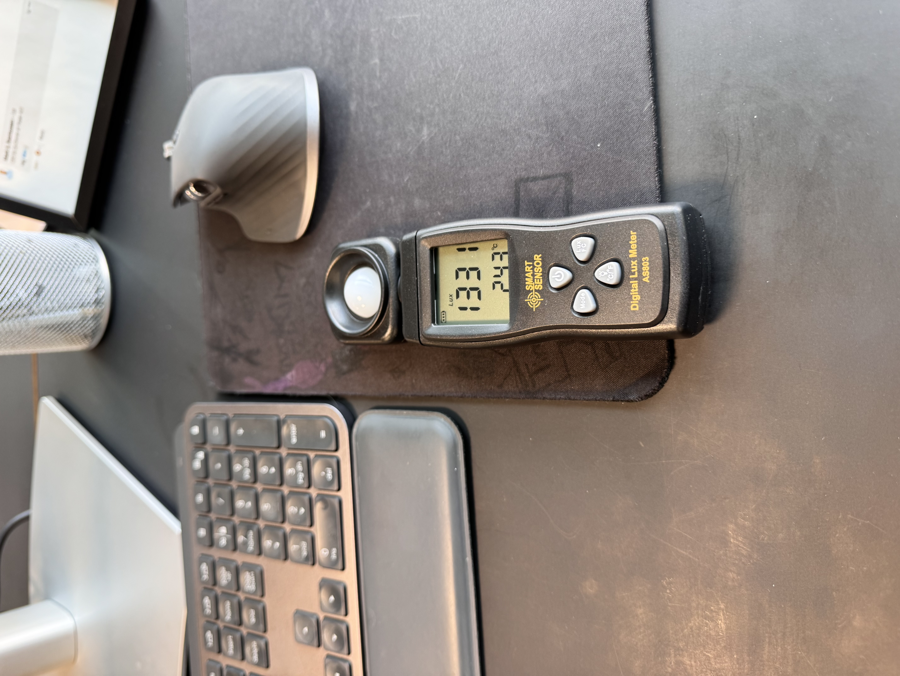
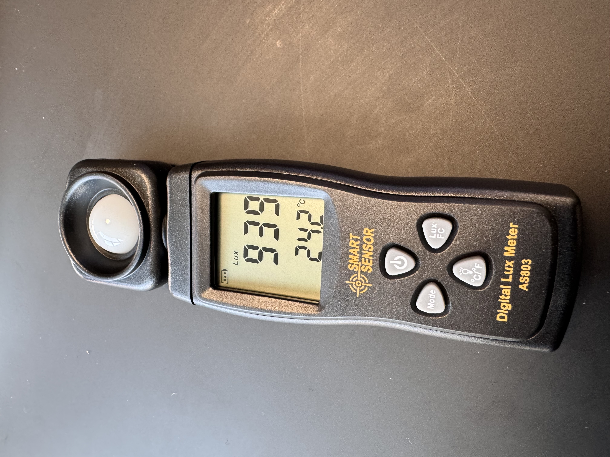
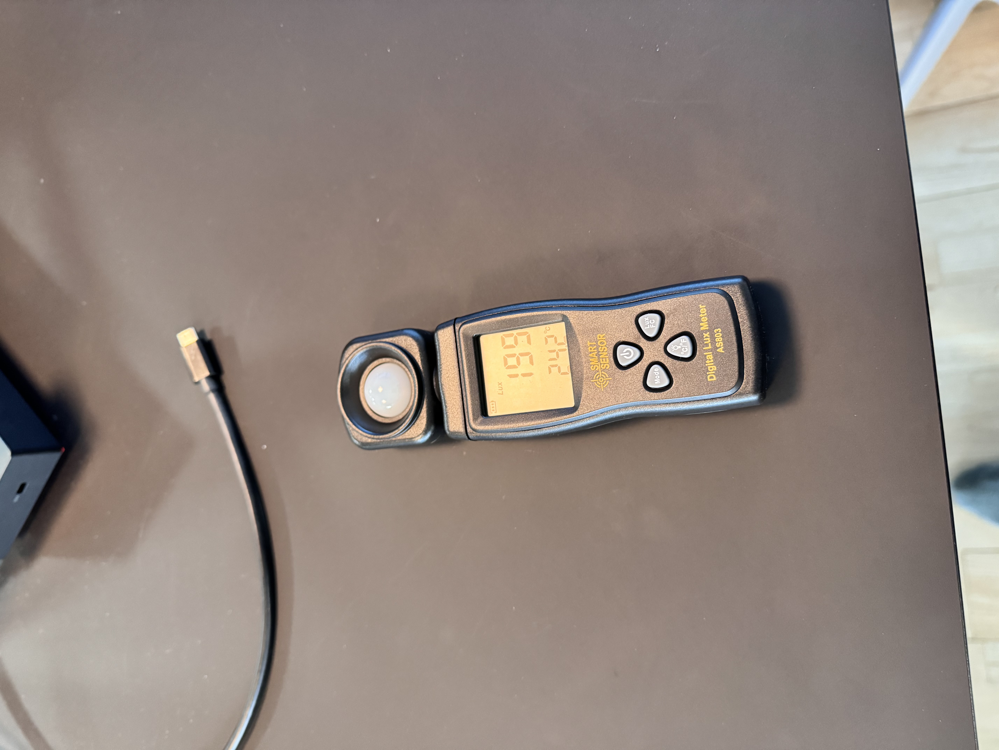
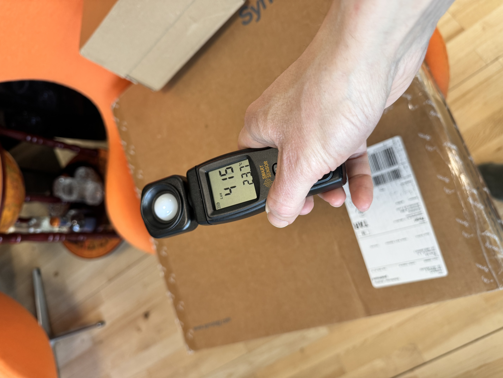
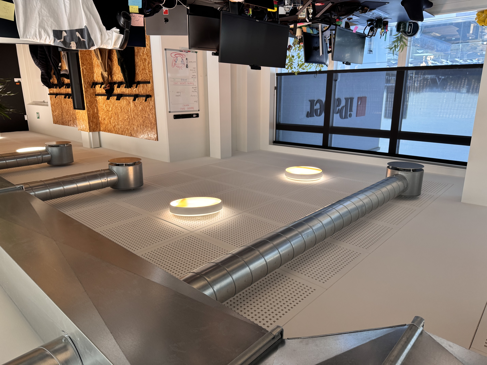
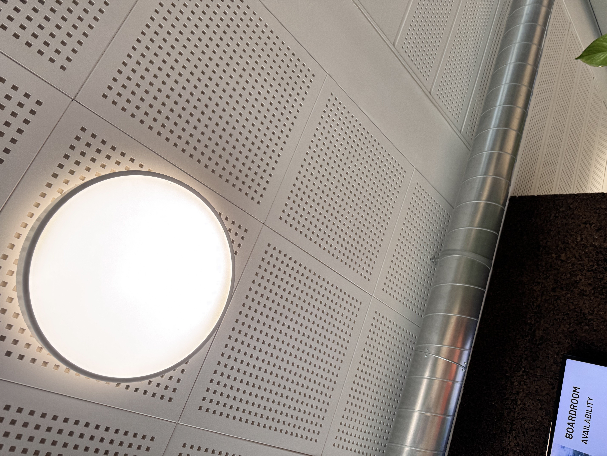

Deltagere og roller
Resumé
På iPapers kontor oplever nogle medarbejdere gener fra loftbelysningen i form af blænding/skarphed, især når det er mørkt udenfor (typisk vinterperioder) og i bestemte zoner (særligt canteen/walkway og enkelte skriveborde tæt på større armaturer).
Luxmålingerne varierer meget (199–1331 lux) og påvirkes i høj grad af dagslys og gardiner. En vigtig indsigt er, at nordvendte gulv-til-loft vinduer giver høje luxmålinger, men dagslyset opleves som behageligt og uden blænding, da solen ikke skinner direkte ind.
Den primære arbejdsmiljøudfordring vurderes at være blænding fra den kunstige belysning (loftarmaturer) og ikke dagslyset. Da iPaper ikke ønsker at udskifte armaturer, og teknisk zoneopdeling/dæmpning ikke er mulig, vælges en løsning baseret på diffusering.
Valgt retning: En ikke-klæbende diffuser/indsats med moderat dæmpning (~100 lux), som pilottestes og evalueres via lux + kort opfølgende medarbejderfeedback.
Gennemført i projektet
- Brugerundersøgelse — n=13 medarbejdere
- Luxmålinger ved bordplade på udvalgte arbejdsstationer (11 målepunkter)
- Test af diffusion/dæmpning via midlertidige filterløsninger i udvalgte armaturer
- Billeddokumentation — luxmeter-aflæsninger + lamper med/uden filter
Formål og afgrænsning
Formål: At reducere generende blænding og "skarp" loftbelysning, så kontor- og skærmarbejde kan foregå komfortabelt og forsvarligt.
- Opgaven omhandler primært loftbelysning og blænding – ikke et fuldt nyt belysningsprojekt.
- Løsninger skal være lav-omkostnings og uden armaturudskiftning.
- Lux bruges som datagrundlag, men blænding afhænger også af luminans/kontrast og synsretning (ikke kun lux).
VED-fasen — Situationsanalyse
Problemformulering
Hvordan reducerer iPaper generende blænding fra loftarmaturer (særligt i canteen/walkway og ved enkelte skriveborde) uden at udskifte armaturerne, så belysningen fortsat er passende til kontor- og skærmarbejde?
Lovkrav og rammer
I Bekendtgørelse om faste arbejdssteders indretning (BEK nr. 835 af 16/06/2023) fremgår bl.a.:
- § 38: Belysningen skal være sådan, at arbejde og færdsel kan foregå forsvarligt.
- § 39: Der skal være tilstrækkelig almen belysning og passende særbelysning.
- § 40, stk. 2: Belysningen må ikke give anledning til sundhedsskadelig påvirkning og skal indrettes, så den ikke giver blænding, generende reflekser eller medfører generende varme.
Som praktisk pejlemærke (DS 700 via BFA Kontor): 500 lux til kontorarbejde, min. 50 lux til gangarealer.
Uønsket tilstand
- Loftarmaturer opleves af nogle som skarpe/blændende, særligt ved direkte indkig.
- Gener opstår især når det er mørkt udenfor (vinter/overskyede dage).
- Nuværende coping: knibe øjne, vinkle skærm, undgå at kigge op, uformelle "blødgøringsforsøg" i lamperne.
Ønsket tilstand og succeskriterier
- Kunstig belysning opleves ikke som skarp/blændende i berørte zoner.
- Lysniveau fortsat passende til kontor- og skærmarbejde (pejlemærke ca. 500 lux).
- Der findes en standardiseret og driftssikker løsning.
- "Sometimes/Often" falder tydeligt i opfølgende mini-survey (mål: tæt på 0–1 svar).
- Luxmålinger ved lavt dagslys viser, at niveauet fortsat er passende.
- Løsningen kan vedligeholdes uden at beskadige armaturer.
Data og dokumentation
A) Brugerundersøgelse — 06/03/2026 (n=13)
Tendenser: Gener opstår især når det er mørkt udenfor/vinter. Lokationer: main work room, ved skriveborde, samt canteen/walkway. Enkelte beskriver følsomme øjne og irritation efter lang skærmdag.
Samlet vurdering: Problemet er ikke stort for alle, men tydeligt i specifikke zoner og for nogle personer – derfor vælges en målrettet løsning fremfor et stort og dyrt projekt.
B) Indsigt om dagslys
- Nordvendte gulv-til-loft vinduer giver høje luxmålinger via kraftigt, diffust dagslys.
- Dagslyset fra nordvinduer blænder ikke – solen skinner ikke direkte ind.
- På sydsiden er semitransparente rullegardiner altid trukket, hvilket dæmper dagslyset.
Konklusion: Høje lux-tal på nordsiden er ikke i sig selv et problem. Fokus bør være kunstig belysning, fordi bekendtgørelsen kræver, at belysningen ikke må give blænding og generende reflekser/varme.
C) Luxmålinger — 06/03/2026
Målt ved bordplade på udvalgte stationer (~0,75 m højde). Målingerne er påvirket af dagslys og gardiner.
| Punkt | Placering | Lux | Lysopsætning / Noter |
|---|---|---|---|
| N1 | Nord, tæt på vindue (række 1) | 939 | Diffust dagslys |
| N2 | Nord, 1 bord ind fra vindue | 800 | Diffust dagslys |
| N3 | Nord, længere nede | 862 | Diffust dagslys |
| N4 | Nord, tæt på vindue (ende) | 1331 | Meget højt diffust dagslys |
| S1 | Syd, amber test + gardiner | 274 | Dæmpet af filter + gardin |
| S2 | Syd, amber test + gardiner | 199 | Dæmpet af filter + gardin |
| S3 | Syd, uden filter | 433 | Sammenligningspunkt |
| S4 | Syd, uden filter | 433 | Sammenligningspunkt |
| M1 | Midterzone (nordsiden af midtergang) | 534 | "Typisk" område |
| N5 | Nord, hjørne | 645 | "Typisk" område |
| N6 | Nord, hvid diffus test | 415 | Diffuser-test |
≤ 300 For lavt / risiko for mørkt ved dæmpning 300–700 Passende til kontorarbejde 700–999 Højt – diffust dagslys ≥ 1000 Meget højt – primært dagslys
De laveste målinger (199–274) er i zone med amber filter + gardiner – understøtter, at amber-løsningen kan gøre det for mørkt til kontorarbejde.
D) Testfiltre — hvordan de er lavet og effekt
Amber (kraftig dæmpning)
Brunt bagepapir lagt ind i LED-armatur. For stor dæmpning til kontorarbejde i de fleste zoner.
Hvid diffus (moderat)
Hvidt bagepapir lagt ind i LED-armatur. Relevant kompromis – reducerer skarphed uden at kvæle arbejdslyset.
Frosted folie (udvendig)
Klistret på ydersiden. Fravalgt: risiko for limrester/skade ved fjernelse (bekymring fra Kirsten).
E) Temperatur- og driftobservation (12 timer tændt)
Relevante LED-armaturer er testet i normal drift i ca. 12 timer uafbrudt. Efter perioden oplevedes armaturerne ikke varme ved overfladen, hvilket indikerer begrænset varmeudvikling ved normal drift og understøtter, at en indlagt diffuser ikke umiddelbart påvirkes af høj varme.
Note: Berøring af ydersiden dokumenterer ikke temperaturen ved alle interne komponenter. Bagepapir anvendes kun som testmateriale. Før permanent udrulning skal der vælges en armatur-egnet indsats med dokumenterede materialeegenskaber og driftssikker montage.
KAN-fasen — Mulige løsninger
| # | Løsningsspor | Status | Begrundelse |
|---|---|---|---|
| 1 | Udskiftning af armaturer | ❌ Fravalgt | iPaper ønsker ikke armaturudskiftning (økonomi vs. problemets omfang) |
| 2 | Styring / dæmpning / zoneopdeling | ❌ Fravalgt | Ikke teknisk muligt i nuværende installation |
| 3 | Diffuser/indsats i armatur | ✅ Valgt | Ikke-klæbende indsats, skalerbar og skånsom for armaturer |
| 4 | Specialrondeller (laser-skåret) | ⚠️ Overvejet | Usikkert ift. pasform og drift – risiko for at det ikke passer |
| 5 | Indretning/skærm-justering | ⚠️ Supplerende | Løser ikke årsagen i armaturet, men kan bruges ved enkeltpladser |
Prioriteringskriterier
- Effekt på blænding og "skarphed"
- Pris (lav) – da iPaper ikke vil udskifte lamper
- Skalerbarhed og drift (nem at vedligeholde)
- Ikke-permanent påvirkning af armatur (ingen limrester)
- Overholdelse af krav om, at belysning ikke må give blænding/reflekser/varme
VIL-fasen — Valg og plan
Valgt løsning: Pilot og efterfølgende mulig udrulning af en ikke-klæbende diffuser/indsats med ca. 100 lux reduktion, baseret på den hvidt-diffuse test (eller tilsvarende professionel/armatur-egnet indsats).
Begrundelse
- 100 lux reduktion giver moderat dæmpning og forventes at reducere blænding uden at "kvæle" lysniveauet.
- 400 lux reduktion (amber/brun) bliver for meget i flere zoner – kan bringe arbejdslyset under pejlemærket 500 lux.
- "Frosted" klæbefolie fravælges som standardløsning pga. risiko for limrester/skade på armaturer.
Krav til endelig løsning
- Løsningen skal kunne standardiseres (samme metode/materiale).
- Løsningen skal kunne rengøres/vedligeholdes uden skade på armaturer.
- Løsningen må ikke skabe nye gener (for mørkt, ujævnt lys) og skal fortsat leve op til §40, stk. 2.
Handlingsplan
| Aktivitet | Ansvarlig | Deadline | Output |
|---|---|---|---|
| Afgrænse præcise zoner/armaturer til pilot | Lasse + Kirsten + Rune | 12/03/2026 | Liste over pilot-armaturer |
| Identificere armaturtype og undersøge egnet indsats | Kirsten + facility | 18/03/2026 | Valgt indsatsmateriale |
| Installere pilot (ikke-klæbende) | Facility / elektriker | 20/03/2026 | Pilot installeret |
| Luxmåling før/efter pilot ved lavt dagslys + foto | Lasse | 25/03/2026 | Sammenlignelige målinger |
| Mini-survey (samme spørgsmål som baseline) | Lasse | 27/03/2026 | Feedback før/efter |
| AMO/ledelse beslutning: udrulning/justering | AMO + Rune | 01/04/2026 | Beslutning + evt. budget |
| Udrulning i relevante zoner | Facility | 15/04/2026 | Implementeret løsning |
| Slutevaluering og dokumentation | Lasse | 22/04/2026 | Evalueringsnotat + læring |
Evalueringsplan
- Lux: Gentag målinger på samme punkter. Mindst én runde ved lavt dagslys. Tjek at skrivebordsniveauer stadig er passende.
- Medarbejderoplevelse: Gentag mini-survey. Succeskriterie: færre "Sometimes/Often".
- Drift og vedligehold: Tjek at indsatsen sidder stabilt, ikke misfarves, og kan rengøres. Ingen nye gener (mørke zoner, ujævnt lys).
GØR-fasen — Gennemførsel og opfølgning
Gennemførsel: Pilot i de mest relevante zoner (walkway/canteen og udvalgte armaturer ved skriveborde).
Kommunikation: Kort info til medarbejdere om testperiode og feedbackkanal.
Opfølgning: Efter 2 uger evalueres pilot (lux + feedback), hvorefter AMO/ledelse beslutter udrulning eller justering.
Bilag 1 — Billeddokumentation
Udskift filnavne med egne billeder til endelig aflevering.
Luxmåler-billeder




Armaturer med/uden filter




Bilag 2 — Brugerundersøgelse (rådata, n=13)
| Timestamp | Frekvens | Hvornår | Hvor | Hvad gøres i dag |
|---|---|---|---|---|
| 06/03/2026 11:27 | Rarely | On dark days in winter. | Main work room. | Nothing ;-) It's really not that bad. |
| 06/03/2026 11:28 | Never | — | — | — |
| 06/03/2026 11:28 | Sometimes | When it's dark outside | At my desk | Squint or try and angle monitor |
| 06/03/2026 11:29 | Sometimes | When it is dark outside | By my desk | Asked for extra filter… very sensitive eyes… |
| 06/03/2026 11:43 | Never | Never | Nowhere | Nothing |
| 06/03/2026 12:03 | Never | — | — | — |
| 06/03/2026 12:32 | Never | — | Canteen (winter after fairy lights) | — |
| 06/03/2026 12:41 | Never | — | — | — |
| 06/03/2026 12:45 | Never | — | — | — |
| 06/03/2026 12:53 | Rarely | Not while working. Only when playing Playstation. | Funzone | Turn off the lights, when possible |
| 06/03/2026 13:01 | Rarely | When I look up into them | At my desk | Try not to look at the lamps |
| 06/03/2026 13:19 | Rarely | Have never really thought about it | At my desk | nothing |
| 06/03/2026 13:25 | Often | Walking towards ceiling lights… | Canteen and walkway | Gels and baking paper in lamps |
Bilag 3 — Luxmålinger (komplet oversigt)
| Målepunkt | Beskrivelse | Lux |
|---|---|---|
| N1 | Nord, tæt på vindue (række 1) | 939 |
| N2 | Nord, 1 bord ind | 800 |
| N3 | Nord, længere nede | 862 |
| N4 | Nord, tæt på vindue (ende) | 1331 |
| S1 | Syd, amber test + gardiner | 274 |
| S2 | Syd, amber test + gardiner | 199 |
| S3 | Syd, uden filter | 433 |
| S4 | Syd, uden filter | 433 |
| M1 | Midterzone (nordsiden af midtergang) | 534 |
| N5 | Nord, hjørne | 645 |
| N6 | Nord, hvid diffus test | 415 |
Kilder
- Bekendtgørelse om faste arbejdssteders indretning (BEK nr. 835 af 16/06/2023), Kapitel 9 Belysning §38–40.
retsinformation.dk - BFA Kontor – "Fakta om lysforhold" (500 lux til kontorarbejde, 50 lux i gangarealer, blænding/reflekser/varme).
bfakontor.dk - Bygningsreglementets vejledning – Elektrisk belysning (DS/EN 12464-1 som reference).
bygningsreglementet.dk